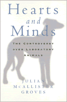

Thought-provoking arguments and behaviors on both sides of the controversy surrounding biomedical research on animals
Thought-provoking arguments and behaviors on both sides of the controversy surrounding biomedical research on animals


 Thought-provoking arguments and behaviors on both sides of the controversy surrounding biomedical research on animals
Thought-provoking arguments and behaviors on both sides of the controversy surrounding biomedical research on animals

|  |
Hearts and MindsThe Controversy Over Laboratory AnimalsJulian McAllister Grovespaper EAN: 978-1-56639-476-5 (ISBN: 1-56639-476-7) |
"[Groves] focused on peoples' feelings-how they feel about the use of animals in research, why they felt the way they did and how they felt about their feelings. The results are truly fascinating."
—Publishers Weekly
Media coverage of angry protestors and acts of sabotage claim so much public attention that few of us question the stereotypes that have developed around the animal research controversy. Those who support animal testing are routinely dismissed as mad scientists, emotionless logicians, or sadists with little regard for nonhuman creatures, while animal protection activists are dismissed as hysterics, antisocial radicals, or simple folk who prize rabbits and rats over human beings.
Julian McAllister Groves takes a fresh look at the arguments and talks to people on both sides to discover what really motivates them. He probes into their ideas and emotions to understand how people get involved and why the arguments become so polarized.
Living in a university town that is an important center of biomedical research, Groves could not ignore the intense opposition to research using animals. As he began to analyze the formation and activities of local protest groups, he started to attend meetings and talk to activists about their beliefs. To his surprise, many activists emphasized rational and scientific justifications for their commitment to the movement. Conversely, scientists who spoke with him frequently discussed their use of lab animals in the context of their feelings about pets or a particular animal that they had become attached to.
Hearts and Minds looks past the placards and sound bites to get to the intellectual and psychological reasons that people use to explain their positions. It discards worn generalizations and offers a nuanced portrait of people who are seriously engaged in reconciling their ethics and their behavior.
Excerpt available at www.temple.edu/tempress
"Groves shows how unproductive shame can be, emotionally and politically, and he usefully highlights this problematic feature of some post-1960s social movements."
—Contemporary Sociology
"...the book provides some interesting insights into movement mobilization and counter mobilization, the perspectives held by members of the respective groups, and the ways in which they explain their activist roles."
—Social Forces
"What makes Groves's study interesting is that he not only interviewed movement participants but also their opponents, researchers who are using animals. The author tries carefully to give actors on both sides of the controversy the opportunity to explain their motives, convictions, and emotions."
—The American Journal of Sociology
Preface
Introduction: Shame
1. The Activists and I
2. The Human Dilemma
3. The College Town
4. All Our Sins
5. Stewardship and Science
6. Learned Emotion
7. Television Doctors
8. Regulations
Conclusion: Feeling Traps
Notes
Bibliography
Index
 | Julian McAllister Groves is a lecturer at the Hong Kong University of Science and Technology in the Division of Social Science. |
Animals, Culture, and Society, edited by Arnold Arluke and Clinton R. Sanders.
Animals, Culture, and Society, edited by Arnold Arluke and Clinton R. Sanders, is concerned with probing the complex and contradictory human-animal relationship through the publication of accessible books that consider the place of animals in our culture, our literature, our society, and our homes.
© 2015 Temple University. All Rights Reserved. This page: http://www.temple.edu/tempress/titles/1178_reg.html.